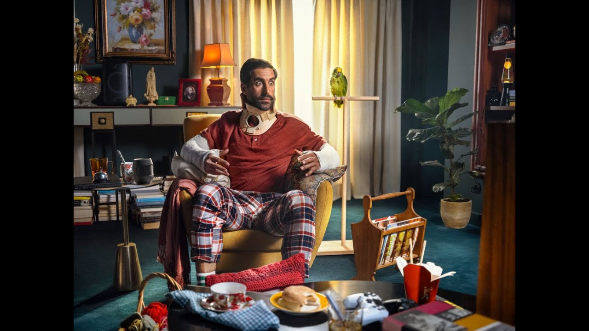
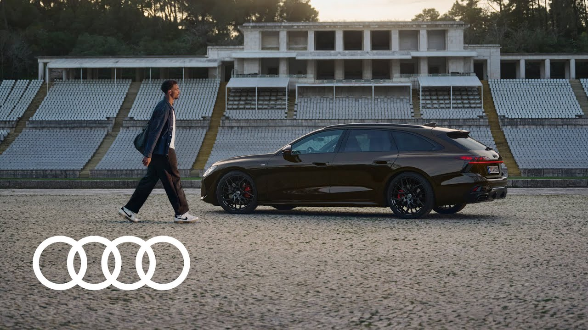
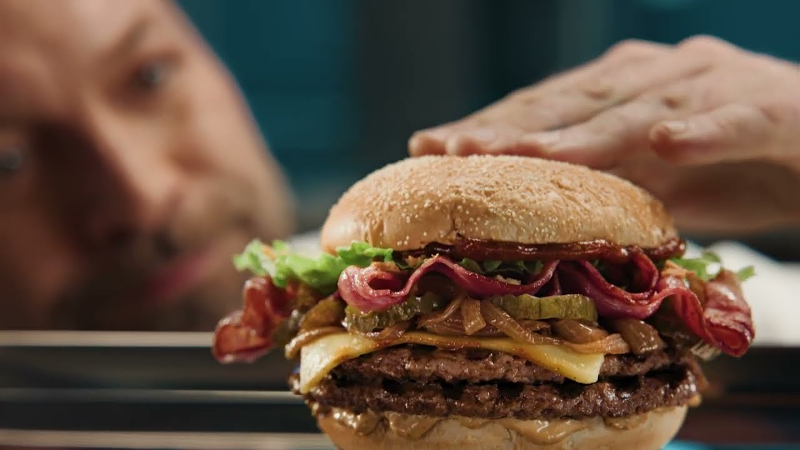
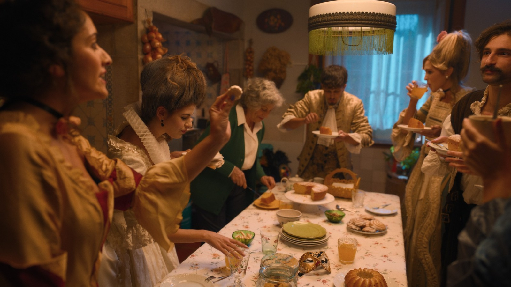
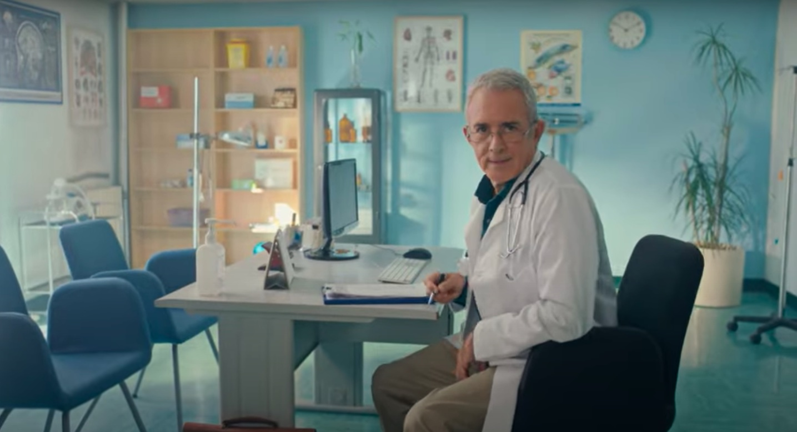
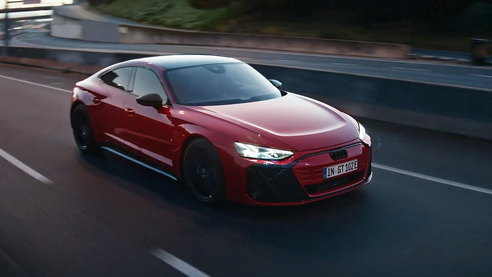
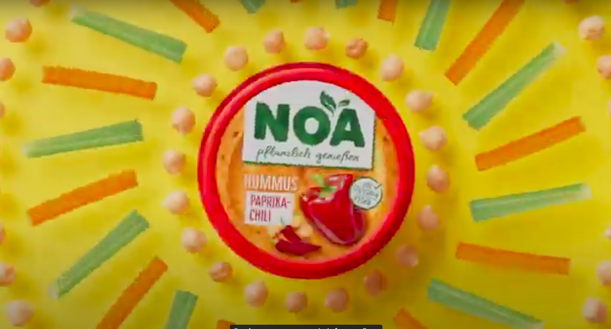
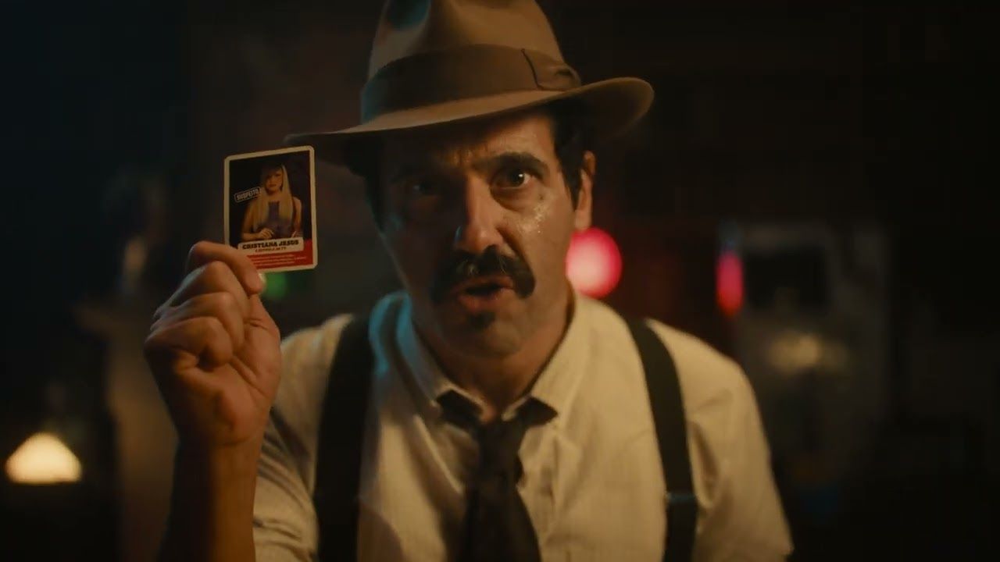

Interiors with character



Lisbon · films · commercials
Visual worlds for bold stories
Art direction and production design built around atmosphere, texture, and frames that stay with you.
Play selected filmsSelected worlds
Sets, rooms, surfaces, light.

Cinematic atmosphere
Warm ensemble scenes

Graphic commercial worlds

Texture and colour

Location styling
Selected films
Press play.

About
Lisbon-born. Story-driven. Detail-obsessed.
Marta do Vale works across cinema and advertising, shaping frames through scenography, set dressing, and art direction that feels tactile, intentional, and cinematic.
Trained in Lisbon and working in art departments since 2011, she brings both visual taste and on-set discipline to every production.
Contact